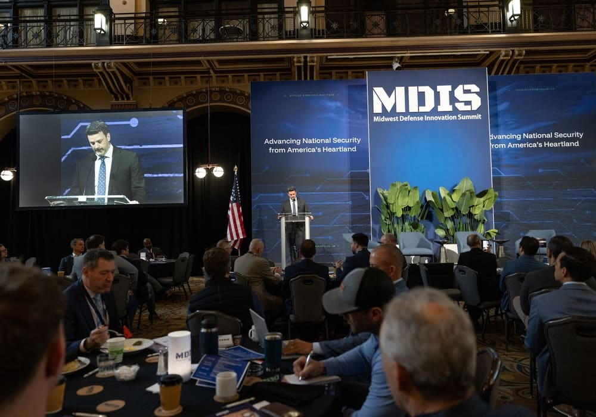

Programs and Initiatives
The platforms powering national security innovation.
ARI builds partnerships that power economic growth and strengthen national security. We combine the depth of the academic with the urgency of the entrepreneur to provide fast, efficient, and quantifiable value to the United States of America.

Accelerating technology transition across the Department of War.
The Rapid Acquisition Model (RAM) is moving technology from initial engagement to awardable outcomes. It powers how government agencies identify, evaluate, and acquire emerging capabilities — reducing friction and accelerating timelines across the lifecycle.
Learn more →Connecting the Midwest to Crane
Linking academia, industry, and government to solve mission-driven challenges and accelerate technology transition.


Midwest Defense Innovation SummitMDIS convenes leaders from government, industry, and academia to accelerate defense innovation, strengthen partnerships, and deliver mission-ready capabilities from the Midwest to the warfighter.Learn more →
Indiana Research ConsortiumARI convenes researchers from Purdue, Indiana University, and Notre Dame into cross-university teams to solve mission-driven challenges for Crane and translate top ideas into fundable solutions.Learn more →Driving economic growth across Indiana
Scaling advanced industries, workforce development, and innovation ecosystems across the state.
Bringing innovation to the Pentagon
Creating clear pathways for innovators to access federal partners, funding, and mission-driven opportunities.

Defense Innovation OnRamp HubsDelivering cutting-edge technology through the CDAO ecosystem.Learn more → SciTechCONNECTEmpowering innovators with the resources to turn groundbreaking ideas into real-world solutions.Learn more →
SciTechCONNECTEmpowering innovators with the resources to turn groundbreaking ideas into real-world solutions.Learn more →
Transforming acquisition to get technology to the warfighter
Turning proven solutions into deployed capabilities at the speed the mission demands.
Have a challenge that needs the right operating model?
ARI structures the pathway, aligns the right stakeholders, and moves from intent to execution.